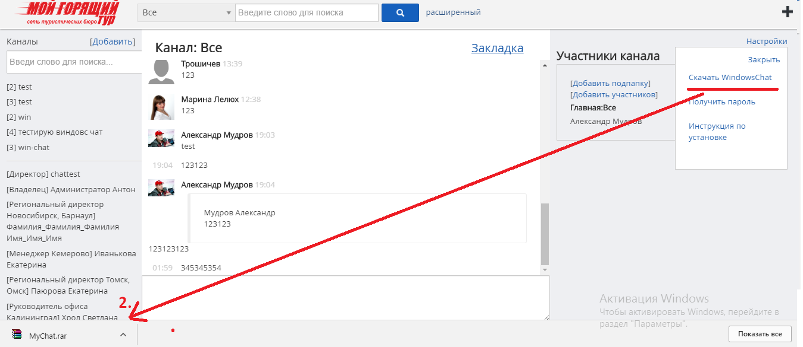

Инструкция по установке и использованию
windows-чата
1.Необходимо зайти в CRM систему в модуль Чат и найти в поле настройки Скачать WindowsChat. Настройки->Скачать WindowsChat

2.Скачанный файл скопировать в мои документы.
3.В "Мои документы" создать папку WinChat и туда скопировать скачанный архив.
4.Разархивировать файл в данной папке.
5.Запустить файл. В случае, если windows или антивирусник будет выдавать ошибку, ставить галочку разрешить выполнение файла.Например, в данном случае нужно выполнить дополнительное действие - нажать на кнопку выполнить в любом случае.
6. После запуска программы в трее появится иконка программы. Необходимо запустить программу 2-ойным щелчком по иконке.
7. После запуска программы из трее откроется панелька, куда необходимо ввести логин и пароль. Чтобы получить ваш логин и пароль,
необходимо в чате нажать Настройки->Получить пароль. На панельке появится ваш логин и пароль, который необходимо ввести в окно.
Пароль вводится один раз, и программа запомнит его.
8.После авторизации откроется окно чата, в нем необходимо выполнить команду: Настройки->Автозапуск->Запускать, После этого программа будет запускаться в трее автоматически после перезагрузки компьютера. Чтобы закрыть диалоговое окно, нажмите на крестик, как показано под цифрой 14 в скриншоте, окно закроется, а иконка чата останется висеть в трее.
9.При входящем сообщении появится всплывающее окно, чтобы открыть диалог чата, необходимо выполнить двойной щелчок по сообщению.
10.В диалоговом окне можно отвечать на входящие сообщения
11.